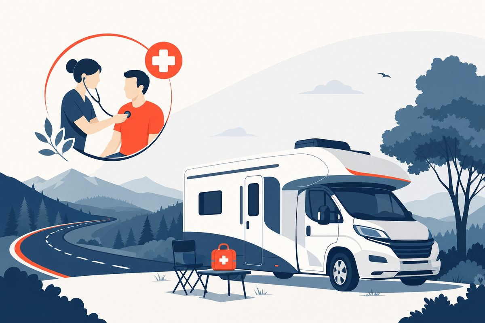

Key Takeaways
- Long duty days make steady hydration and bathroom breaks harder for crew. In one randomized trial, women with recurrent bladder infections who drank an extra 1.5 L of water a day had fewer episodes.[17]
- Whether cabin air dehydrates you is debated: one review argues long-haul flights may accelerate dehydration, while the UK CAA says the extra fluid loss over an 8-hour flight is about 150 mL, with no change in plasma osmolality.[7][8]
- Long-haul flying raises clot risk about threefold, mainly because of prolonged limited mobility rather than the cabin itself. The absolute risk is about 1 in 4,656 long-haul flights.[4][14]
- Aircrew are exposed to cosmic radiation, and international radiation-protection guidance counts flight crew among occupationally exposed workers. It is a documented exposure, not a cause for alarm.[2][9]
- Telehealth helps with non-emergency conditions and non-controlled refills during a layover in a covered state. It cannot replace an aviation medical examiner for FAA medical certificate exams, and in-flight emergencies go through the airline's ground-based medical consultation service.[15][9]

Who This Guide Is For
This guide is written for flight attendants, pilots, and other crew. Flight attendants alone held about 133,700 jobs in the United States in 2025, according to the Bureau of Labor Statistics (figure as of its August 2026 update).[1] It is not written for occasional leisure travelers.
The core problem for crew is not income or insurance access; it is time and geography. A flight attendant might sleep in Seattle Monday, Denver Wednesday, and be on reserve in a fourth city by Friday. Standard primary care, booked weeks out in one city during business hours, does not fit that schedule. The practical question is less "what is wrong with me" and more "how do I get this looked at before my next flight."
This guide covers conditions that come up often for crew: recurrent UTIs, sinus and ear pressure, jet lag and sleep disruption, blood clot risk with long-haul immobility, travelers' diarrhea, and fatigue and stress. Each section ends with what a clinician can and cannot reasonably do about it remotely.
If your home is on four wheels rather than in a cabin, see our companion guide to health care while living in an RV full time.
Why the Job Makes You Sick the Way It Does
Commercial aircraft cabins are pressurized to a "cabin altitude" that should not exceed 8,000 feet in normal operations and in practice typically sits between 5,000 and 7,500 feet. Cabin humidity typically runs 10 to 20%, compared with about 40 to 50% in buildings.[8] What that combination actually causes in a healthy adult is more nuanced than most crew wellness content admits.
Dehydration: a genuinely contested claim. A 2020 narrative review in Nutrients argues that fluid balance on long-haul flights is an overlooked issue and that these flights may accelerate dehydration, while acknowledging that the few studies of traveling athletes provide no real evidence of how acute dehydration affects their health.[7] The UK Civil Aviation Authority, by contrast, states that low cabin humidity does not result in dehydration: the added insensible fluid loss is about 150 mL over an 8-hour flight, with no evidence of any change in plasma osmolality. The CAA does note that dry air can dry the lips, tongue, and eyes.[8] The honest summary: dry cabin air and long duty periods make it easy to under-hydrate as a matter of comfort and habit, which is not the same as a proven dehydration illness.
UTIs: a habit and access problem. Long duty periods and limited lavatory access make it harder to drink steadily and to urinate when needed. Fluid intake is the modifiable factor with trial evidence behind it: in a randomized trial of women with recurrent cystitis who drank little fluid, adding 1.5 L of water a day reduced episodes over 12 months.[17]
Sinus and ear pressure is better supported mechanistically: during descent, air must flow back through the Eustachian tube into the middle ear, and when that fails it can cause fullness, reduced hearing, and pain.[9] People flying with an upper respiratory infection may get ear or sinus pain and bleeding from barotrauma.[8] Circadian disruption is also well supported: aircrew often cross time zones and work when others normally sleep, and NIOSH describes jet lag as a type of circadian disruption.[2]
DVT and immobility deserve precise framing. CDC's Yellow Book says the increased clot risk with long-distance air travel is due mainly to prolonged limited mobility rather than the air cabin environment,[4] and a cabin-environment review states there is no evidence that flying itself is a risk factor for DVT.[9] CDC notes that anyone traveling more than 4 hours, whether by air, car, bus, or train, can be at risk, and lists personal risk factors such as recent surgery, estrogen-containing contraceptives, and a previous blood clot.[10] Cosmic radiation is a real exposure: aircrew are exposed to cosmic radiation from the sun and space.[2] International radiation-protection guidance (ICRP) recommends an occupational limit of 20 mSv a year, averaged over 5 years, for workers exposed to radiation on the job, including flight crew, and typical long-haul crew schedules accumulate around 4 to 5 mSv a year.[9] It is a recognized occupational fact, not a reason for alarm.
Recurrent UTIs on a Crew Schedule
Long duty periods, inconvenient bathroom breaks, and irregular hydration make UTI prevention harder for crew. That does not mean cabin pressure or dehydration directly causes infection; it means working conditions make protective habits, like drinking steadily, harder to keep. We found no published studies measuring how often crew get UTIs, so this section draws on evidence from adults in general.
Fever, chills, flank or back pain, nausea or vomiting, blood in the urine, pregnancy, or infections recurring soon after finishing antibiotics all warrant an in-person visit with an exam and urine culture, not a remote-only visit or empiric self-treatment. These can indicate a kidney infection or resistant organism needing targeted, physician-directed treatment. MedlinePlus advises contacting your provider right away for back or side pain, chills, fever, or vomiting, since these may be signs of a kidney infection, and also if UTI symptoms come back shortly after antibiotic treatment.[18]
For uncomplicated cystitis without red flags in otherwise healthy, non-pregnant premenopausal women, the 2010 IDSA and ESCMID guideline lists nitrofurantoin, trimethoprim-sulfamethoxazole (if local resistance does not exceed 20% or the infecting strain is known to be susceptible), and fosfomycin as appropriate choices, selected by a clinician.[5] Choosing and dosing an antibiotic is physician-managed; this guide does not provide self-dosing instructions. For recurrent UTIs, the useful step is a physician conversation about a prevention plan.
Practical prevention: drink fluids consistently through the duty day, not just at layovers, and use the lavatory when possible. In a 12-month randomized trial of 140 premenopausal women with recurrent cystitis who drank less than 1.5 L of fluid a day, adding 1.5 L of water daily lowered the average number of episodes from 3.2 to 1.7.[17] Cranberry and probiotics have inconsistent trial evidence: reasonable adjuncts, not substitutes for hydration or physician-directed treatment.
Sinus and Ear Pressure
Barotrauma, meaning pain or injury from unequal pressure across the eardrum or sinus cavities, is one of the most mechanically straightforward problems here. As cabin pressure changes during ascent and descent, the middle ear and sinuses equalize through the Eustachian tube and sinus openings. When those passages are swollen from a cold, allergies, or sinusitis, equalization fails, ranging from uncomfortable pressure to, in more severe cases, eardrum injury.
The practical question crew face repeatedly is whether to fly with congestion at all. Mild allergy congestion responding to a nasal steroid or antihistamine is generally manageable. Active sinus infection with facial pain, drainage, or fever is different: flying can worsen symptoms, and distinguishing infection from a purely mechanical pressure problem is worth doing first.
Short-acting decongestants before descent are commonly used but carry cautions: oral decongestants can raise blood pressure and cause insomnia, and nasal sprays used more than a few days can cause rebound congestion worse than the original problem. These are reasonable tools for an isolated flight, not a daily crutch for chronic congestion, which deserves its own evaluation.
Jet Lag, Sleep, and Back-of-the-Clock Flying
Jet lag results from a mismatch between the internal circadian clock, which light strongly resets, and the current time zone. Symptoms can include difficulty sleeping, excessive daytime sleepiness, general malaise, impaired performance, and gastrointestinal upset, and adapting tends to be slower after eastward travel.[11] Back-of-the-clock flying, working when others normally sleep, adds circadian disruption even without crossing zones.[2]
Light is the strongest signal for resetting the body clock, and its timing matters.[11] Melatonin can also help: a Cochrane review found that in nine of ten trials, melatonin taken close to the target bedtime at the destination (10 pm to midnight) decreased jet lag after flights crossing five or more time zones, and that taken at the wrong time, early in the day, it can cause sleepiness and delay adaptation to local time.[12] How well light and melatonin work depends greatly on when they are used.[11]
Crew should be cautious about sedating medications to force sleep on an unfamiliar schedule. Benzodiazepines and other sedative-hypnotics blunt next-day alertness in ways unwelcome in a safety-sensitive job, and none are appropriate for telehealth prescribing here: controlled substances are not prescribed through telehealth in this practice. Pilots face an added layer: the FAA's Do Not Issue/Do Not Fly guidance for aviation medical examiners (updated September 30, 2026) states that all currently available sleep aids, prescription and over-the-counter, can impair mental processes and reaction times even when the person feels fully awake, and it directs AMEs to caution pilots not to fly until a specific period has passed after the last dose.[16] Pilots should check any sleep aid against the FAA's current guidance and with their AME. Light exposure, a portable wind-down routine, and melatonin used thoughtfully are the more sustainable approach.
Blood Clots and Long-Haul Immobility
Deep vein thrombosis (DVT) is a clot that forms in a deep vein, typically in the leg. The honest framing: CDC's Yellow Book attributes the added risk with long-distance air travel mainly to prolonged limited mobility rather than the air cabin environment.[4] CDC's traveler guidance says anyone traveling more than 4 hours, whether by air, car, bus, or train, can be at risk for blood clots.[10] A detailed aircraft cabin environment review states there is no evidence that flying itself is a risk factor for DVT.[9]
Long-haul flights do raise relative risk, and it climbs with duration. In a cohort of 8,755 employees of international organisations, the risk after flights of at least 4 hours was about 3.2 times that of not flying, and each extra hour of flight duration raised it about 1.1-fold.[14] The absolute risk stays low, about one event per 4,656 long-haul flights, though the cohort was a working population with a mean age of 40, so the authors expect risk in the general population to be higher.[14] The dominant drivers are prolonged immobility and personal risk factors.
| Risk factor | Why it matters |
|---|---|
| Immobility beyond ~4 hours | Slows venous return via reduced calf-muscle pump activity |
| Recent surgery or injury (~3 months) | Tissue injury and reduced mobility raise clotting risk |
| Estrogen-containing contraceptives or hormone therapy | Increases clotting factor activity |
| Pregnancy and postpartum period | CDC counts the postpartum period up to 3 months after childbirth |
| Prior blood clot or clotting disorder | A personal or inherited clotting history raises baseline risk |
| Obesity, active cancer, age over ~40 | Each raises baseline risk |
Risk factors from CDC guidance on blood clots and travel; the "why it matters" notes are general physiology.[10]
The average one-in-4,656 figure reassures the healthy majority but understates risk for crew carrying the factors above, which is where prevention actually matters. For crew, the practical exposure is less any single flight and more the cumulative immobility of reserve duty, long deadheads, and jump-seat repositioning across a trip. CDC advises moving your legs frequently on long trips and exercising your calf muscles to improve blood flow.[10] Walking the aisle, avoiding crossed-leg sitting for hours, and adequate hydration are reasonable, low-cost habits too, especially for crew carrying the personal risk factors above. Warning signs warranting prompt, same-day evaluation: swelling of one leg or arm, pain or tenderness you can't explain, skin that is warm to the touch, or redness; CDC says to contact your doctor as soon as possible. Difficulty breathing, chest pain that worsens with a deep breath or cough, a fast or irregular heartbeat, coughing up blood, lightheadedness, or fainting can indicate pulmonary embolism and need emergency evaluation; CDC says to seek medical help immediately.[10]
Traveler's Diarrhea and Layover Food
Crew eat on the road more than almost any other profession, with routine exposure to food- and water-borne pathogens that cause travelers' diarrhea, particularly on international layovers. The CDC Yellow Book's guidance is straightforward: following food and water precautions can help reduce, though never fully eliminate, the risk of illness.[3]
Oral rehydration is the foundation of treatment for most cases: CDC calls replacement of fluid losses key to diarrhea therapy.[3] Some travelers, ahead of a trip, discuss a "standby therapy" plan with a physician: a specific antibiotic or antimotility regimen pre-arranged for use only if defined symptoms develop. CDC advises healthcare professionals to counsel travelers on medication options, and for mild diarrhea antibiotic treatment is not recommended.[3] This is physician-guided and individualized, not a general instruction to self-treat; this guide does not provide antibiotic self-dosing instructions.
Seek care, rather than relying on over-the-counter measures alone, for a fever, blood in the stool, signs of significant dehydration, or symptoms persisting beyond a few days despite rehydration. MedlinePlus advises getting medical help right away for symptoms of severe dehydration, a fever, or bloody stools.[19]
Sleep Debt, Stress, and Mental Health
The cumulative toll of irregular schedules, time-zone disruption, and time away from support systems is a real occupational health issue for crew, not a personal failing. Chronic sleep debt affects mood regulation and decision-making, and repeated time away from a stable routine compounds ordinary work stress in ways that are easy to normalize.
Real resources exist. Union-affiliated Employee Assistance Programs offer confidential help: AFA-CWA says its EAP helps flight attendants get appropriate medical help for mental health issues, that members and their families can confidentially connect with local AFA EAP representatives at any time, and that no problem is too big or too small.[13] APFA offers comparable resources. None require reaching a crisis point to use.
Fatigue dismissed as "just the job" can mask treatable depression or anxiety, and unaddressed sleep debt compounds every other issue in this guide. Seeking help is appropriate self-maintenance for a demanding job, not an exception to it.
How Crew Actually Get Care Today (and the Gaps)
Crew health-seeking behavior has developed its own informal culture, often out of necessity: peer advice in crew rooms, over-the-counter self-treatment, and "waiting until I'm home" are common, given how poorly standard scheduled care fits this job.
Formal options exist. Some airlines maintain onsite clinics at major crew bases during business hours, useful when schedule and location line up but less so for reserve crew rarely at base. Union EAPs cover mental health and referrals well but are not a substitute for acute evaluation. Employer virtual-care benefits can be a good first stop when available, and local urgent care during a layover remains the most reliable option for anything requiring an exam.
The honest gap: off-hours illness, reserve status, and regional-carrier assignments create windows where none of the above line up with when and where a crew member needs care. That gap is where telehealth has a legitimate, bounded role: one additional option for the hours and locations the existing system does not reliably cover.
What Telehealth Can and Cannot Do for Crew
For crew, telehealth occupies a clearly defined place: it is well-suited to the routine, non-emergency needs that a rotating multi-state schedule makes hard to handle in person, and it is explicitly not a substitute for aeromedical certification, emergency care, or anything requiring a physical exam. Understanding that boundary is what keeps it useful rather than risky.
Telehealth-Appropriate
- Non-emergency acute conditions: Uncomplicated UTIs, mild sinus congestion, and similar issues, evaluated by video when the patient is physically located in a state the clinician is licensed in
- Non-controlled medication refills: Continuing established maintenance medications (blood pressure, thyroid, asthma, allergy, contraception) when clinically appropriate
- Jet-lag and behavioral counseling: Reviewing light timing, sleep strategy, and appropriate melatonin use for a specific rotation
- Same-day access on a layover: Reaching a clinician from a hotel in a covered state, without finding and traveling to an unfamiliar urgent care
Requires In-Person Evaluation or a Different Provider
- FAA medical certificates: Under 14 CFR 67.405, medical certificate examinations are performed by aviation medical examiners (AMEs), and first-class exams only by AMEs specifically designated for that purpose.[15] A general telehealth visit is not a substitute. The FAA maintains an official AME locator.[6]
- In-flight medical emergencies: Most airlines have ground-based medical consultation services that advise on care during flight[9] (providers include MedAire/MedLink and STAT-MD), together with 911 once the aircraft is on the ground
- Controlled substances: Not appropriate for this telehealth pathway; these require a local prescriber
- Anything needing an exam, imaging, or labs: Red-flag symptoms and conditions requiring physical examination or testing should be triaged to in-person care
One licensing detail matters for crew specifically: a telehealth clinician is licensed to see patients based on where the patient is physically standing at the time of the visit, not where they are based. A rotation that keeps landing in states a given clinician is not licensed in will keep hitting that access gap regardless of the service used. As with any care decision, when in-person evaluation is indicated, that is the right path; telehealth is the convenient option for the narrow band of problems where a video visit is genuinely sufficient.
Frequently Asked Questions
Options depend on base and airline. Some carriers offer onsite airport clinics during business hours, and union EAPs can point crew toward local resources. For non-emergency issues on a layover in a covered state, a video visit can provide same-day evaluation and, when appropriate, a prescription sent to a local pharmacy. Anything requiring an exam, imaging, or labs still needs urgent care.
There is little published data on how often crew get UTIs. Long duty periods, service demands, and limited lavatory access make it harder to drink steadily and to use the bathroom when needed. Fluid intake is the modifiable factor with the clearest trial evidence: in a randomized trial of premenopausal women with recurrent cystitis who drank little fluid, adding 1.5 L of water a day reduced episodes over 12 months.[17] Consistent hydration and voiding when possible are the habits most within a crew member's control.
Often yes, for non-controlled medications, if you're physically located in a state where your clinician is licensed at the time of the visit and the medication is appropriate for remote management. Controlled substances generally cannot be prescribed this way. Bring your medication list and confirm your current state before booking, since coverage is state-specific, not airline-specific.
It can, with a key limitation: a clinician must generally be licensed in the state where you are physically located at the time of the visit, not your home state. Crew based in or regularly laying over in covered states can use it opportunistically for eligible conditions. Reserve, part-time, and regional-carrier schedules crossing many states make this inconsistent: a real access gap, not a fully solved problem.
No. FAA medical certificate examinations for pilots and other certificated airmen are performed by aviation medical examiners (AMEs) under 14 CFR 67.405, and first-class exams only by AMEs specifically designated for that purpose.[15] A general telehealth visit cannot substitute for this exam, regardless of how routine the underlying condition seems. Use the FAA's AME locator to find an examiner near your base or home.[6]
No. In-flight medical events should go through the airline's established emergency protocol, which typically connects crew to ground-based aeromedical support services such as MedAire/MedLink or STAT-MD, staffed by physicians experienced in in-flight decisions. On the ground, call 911 or local emergency services. General consumer telehealth platforms are not equipped or positioned for in-flight emergencies.
A reasonable kit includes oral rehydration salts, a thermometer, basic wound supplies, personal prescription medications with extra buffer for delays, and motion-sickness and antidiarrheal remedies discussed in advance with a physician. Skip self-carried antibiotics without a physician's guidance; treatment should be matched to a diagnosis, not carried speculatively for unknown future use. CDC advises healthcare professionals to counsel travelers on medication options for travelers' diarrhea, and antibiotics are not recommended for mild cases.[3]
Bottom Line
Cabin crew face a recognizable, largely predictable set of health issues driven mostly by schedule and behavior, not exotic cabin physiology. Long duty days make UTI prevention harder, and steady hydration is the habit with trial support. The dehydration claim itself is genuinely contested and should be treated as a comfort issue, not a settled diagnosis. The added clot risk on long flights comes mainly from prolonged immobility and personal risk factors rather than the cabin environment. Sinus and ear barotrauma, jet lag, and cosmic radiation exposure have the strongest direct evidence and call for practical prevention rather than alarm.
The bigger unsolved problem is access, not diagnosis: a job that puts people in a different state every few days does not fit scheduled, single-location primary care. Employer clinics, union EAPs, and local urgent care each cover part of that gap; telehealth covers non-emergency conditions and non-controlled refills, in states where the clinician is licensed. It does not replace an FAA Aviation Medical Examiner for certification, and it is never the right channel for an in-flight emergency, which belongs with ground-based aeromedical support and, on the ground, 911.
References
- U.S. Bureau of Labor Statistics. "Flight Attendants." Occupational Outlook Handbook. Last modified August 27, 2026. Accessed November 15, 2026. https://www.bls.gov/ooh/transportation-and-material-moving/flight-attendants.htm
- National Institute for Occupational Safety and Health (NIOSH). "Aircrew and Workplace Exposures." Centers for Disease Control and Prevention. Last reviewed June 4, 2024. Accessed November 15, 2026. https://www.cdc.gov/niosh/aviation/prevention/index.html
- Centers for Disease Control and Prevention. "Travelers' Diarrhea." CDC Yellow Book 2026: Health Information for International Travel. Last reviewed March 24, 2026. Accessed November 15, 2026. https://www.cdc.gov/yellow-book/hcp/preparing-international-travelers/travelers-diarrhea.html
- Centers for Disease Control and Prevention. "Deep Vein Thrombosis & Pulmonary Embolism." CDC Yellow Book 2024: Health Information for International Travel. Accessed November 15, 2026. https://wwwnc.cdc.gov/travel/yellowbook/2024/air-land-sea/deep-vein-thrombosis-and-pulmonary-embolism
- Gupta K, Hooton TM, Naber KG, et al. "International clinical practice guidelines for the treatment of acute uncomplicated cystitis and pyelonephritis in women: A 2010 update by the Infectious Diseases Society of America and the European Society for Microbiology and Infectious Diseases." Clinical Infectious Diseases. 2011;52(5):e103-e120. PMID 21292654. https://doi.org/10.1093/cid/ciq257
- Federal Aviation Administration. "Aviation Medical Examiner (AME) Locator." Last updated April 12, 2024. Accessed November 15, 2026. https://www.faa.gov/pilots/amelocator
- Zubac D, Buoite Stella A, Morrison SA. "Up in the Air: Evidence of Dehydration Risk and Long-Haul Flight on Athletic Performance." Nutrients. 2020;12(9):2574. Narrative review. PMID 32854320. https://pmc.ncbi.nlm.nih.gov/articles/PMC7551461/
- UK Civil Aviation Authority. "Physiology of flight." Guidance for health professionals. Accessed November 15, 2026. https://www.caa.co.uk/air-passengers/about-your-trip/health-and-medical/guidance-for-health-professionals/physiology-of-flight/
- Bagshaw M, Illig P. "The Aircraft Cabin Environment." In: Travel Medicine. Elsevier; 2019:429-436. Book chapter. doi:10.1016/B978-0-323-54696-6.00047-1. https://pmc.ncbi.nlm.nih.gov/articles/PMC7152029/
- Centers for Disease Control and Prevention. "Understanding Your Risk for Blood Clots with Travel." Last reviewed May 15, 2024. Accessed November 15, 2026. https://www.cdc.gov/blood-clots/risk-factors/travel.html
- Vosko AM, Colwell CS, Avidan AY. "Jet lag syndrome: circadian organization, pathophysiology, and management strategies." Nature and Science of Sleep. 2010;2:187-198. Review. PMID 23616709. https://pmc.ncbi.nlm.nih.gov/articles/PMC3630947/
- Herxheimer A, Petrie KJ. "Melatonin for preventing and treating jet lag." Cochrane Database of Systematic Reviews. 2002;(1):CD001520. Systematic review. PMID 11279722. https://pmc.ncbi.nlm.nih.gov/articles/PMC8958662/
- Association of Flight Attendants-CWA (AFA-CWA). "Employee Assistance Program." Accessed November 15, 2026. https://www.afacwa.org/employee_assistance
- Kuipers S, Cannegieter SC, Middeldorp S, Robyn L, Büller HR, Rosendaal FR. "The absolute risk of venous thrombosis after air travel: a cohort study of 8,755 employees of international organisations." PLoS Medicine. 2007;4(9):e290. Cohort study. PMID 17896862. https://pmc.ncbi.nlm.nih.gov/articles/PMC1989755/
- Electronic Code of Federal Regulations. Title 14, Part 67, Subpart E, § 67.405 "Medical examinations: Who may perform?" Accessed November 15, 2026. https://www.ecfr.gov/current/title-14/chapter-I/subchapter-D/part-67/subpart-E
- Federal Aviation Administration. "Do Not Issue - Do Not Fly." Guide for Aviation Medical Examiners. Updated September 30, 2026. Accessed November 15, 2026. https://www.faa.gov/ame_guide/media/DNI_DNF_tables.pdf
- Hooton TM, Vecchio M, Iroz A, et al. "Effect of Increased Daily Water Intake in Premenopausal Women With Recurrent Urinary Tract Infections: A Randomized Clinical Trial." JAMA Internal Medicine. 2018;178(11):1509-1515. PMID 30285042. https://doi.org/10.1001/jamainternmed.2018.4204
- MedlinePlus (U.S. National Library of Medicine). "Urinary tract infection in women - self-care." Review date May 22, 2025. Accessed November 15, 2026. https://medlineplus.gov/ency/patientinstructions/000391.htm
- MedlinePlus (U.S. National Library of Medicine). "Traveler's diarrhea diet." Review date October 1, 2025. Accessed November 15, 2026. https://medlineplus.gov/ency/article/002433.htm